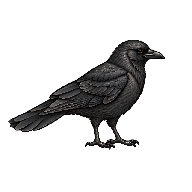
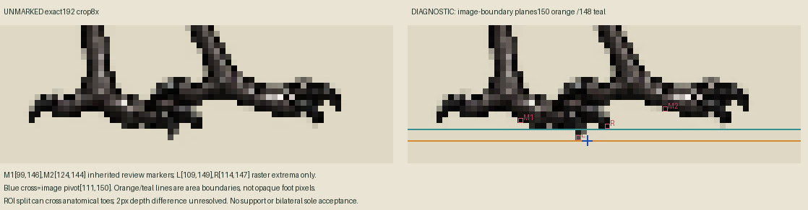

Exact old neutral frame54329…; zero calls/new drawings. Canvas192/density157/152=185.88535031847132CSSpx. Current live digest identity is unresolved and separate. No perching or walking fallback.
LIGHT exact normal worldsize

DARK exact normal worldsize
Orange imageplane y150; cyan imagepivot111/150. These are diagnostics, not accepted support.

Pixel-area lower boundaries150/148 imply2px=1.9363world depth residual under common root. Split ROI ownership and actual weighted soles are uncertain; unchanged art not snapped/repainted. Independent anatomical assessment pending.
geometryReviewed=false; supportWorld=null; current Mac admission unknown.